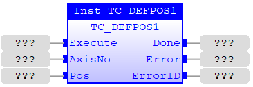
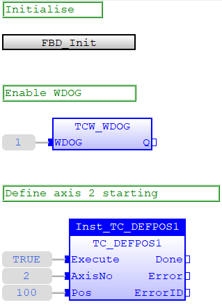
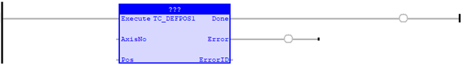
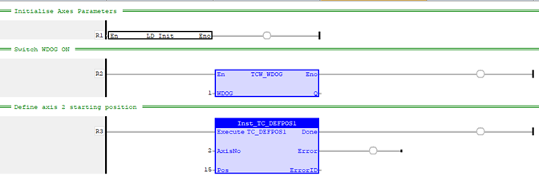

Motion Function
Applies a new DEFPOS request for one axis specified by 'AxisNo'.
|
Execute : BOOL; |
Rising edge requests execution |
|
AxisNo : USINT; |
Axis number |
|
Pos : LREAL; |
Position value to be applied |
|
Done : BOOL; |
TRUE when function has completed normally |
|
Error : BOOL; |
TRUE if a program error is detected |
|
ErrorID : UINT; |
Returned error number |
When the Execute input changes from FALSE to TRUE (rising edge), the function block issues the command for execution in the velocity profile software. The value in Position is applied to the axis given by AxisNo.
A programming error, such as parameter out of range, will set the Error output and return an error ID number. For the Error ID reference, see the Trio Programming error list.
Inst_TC_DEFPOS1( Execute (*BOOL*) , AxisNo (*USINT*) , Pos (*LREAL*) );
The position of axis 2 is set using TC_DEFPOS1 command after initialisation and activation of WDOG.
// Initialise axes parameters
ST_Init
();
// Switch on WDOG
TCW_WDOG
(
1
);
// Define starting position for axis 2
Inst_TC_DEFPOS1(
TRUE
,
2
,
25
);

The position of axis 2 is set using TC_DEFPOS1 command after initialisation and activation of WDOG.


The position of axis 2 is set using TC_DEFPOS1 command after initialisation and activation of WDOG.
